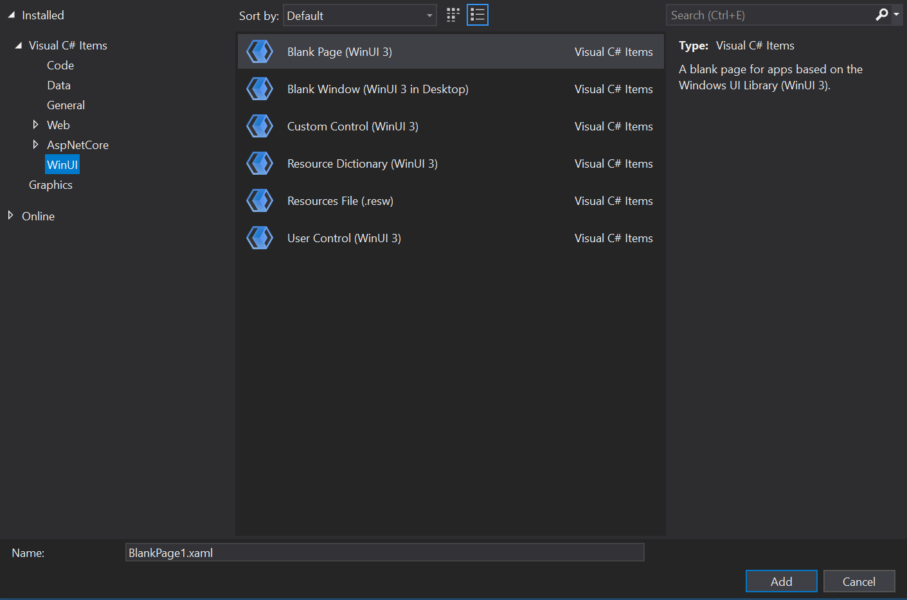
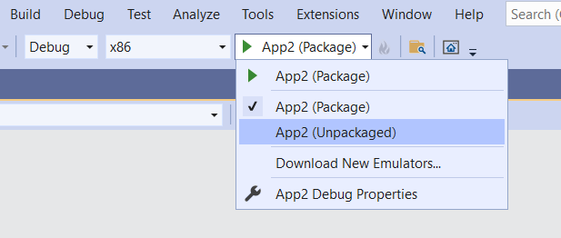

Create your first WinUI 3 (Windows App SDK) project
In this topic we'll see how to use Visual Studio to create a new Windows App SDK project for a C# .NET or C++ app that has a WinUI 3 user interface (UI). We'll also take a look at some of the code in the resulting project, what it does, and how it works.
Links to full installation details are in the steps below. We recommend that you install and target the latest Stable release of the Windows App SDK (see Stable channel release notes).
Tip
No matter what version of the Windows App SDK you choose to install and target (or what version of Visual Studio you use), it's important to check any limitations and known issues in the release notes for that version (see Windows App SDK release channels). By knowing about any limitations and known issues for your version of the Windows App SDK, you'll be able to work around them should you run into any of them while following along with the steps in this topic.
If you encounter any other issues, then you'll likely find info about them in GitHub issues, or on the Discussions tab, of the WindowsAppSDK GitHub repo; or via an online search.
Important
If you're working on a UWP app, then refer to Migrate from UWP to the Windows App SDK.
Packaged, unpackaged, and packaged with external location
Packaging is an important consideration of any Windows App SDK project. For more info about your packaging options, see Advantages and disadvantages of packaging your app.
Packaged: Create a new project for a packaged C# or C++ WinUI 3 desktop app
To set up your development computer, see Install tools for the Windows App SDK.
In Visual Studio, select File > New > Project.
In the New Project dialog's drop-down filters, select C# or C++, Windows, and WinUI, respectively.
Select the Blank App, Packaged (WinUI 3 in Desktop) project template, and click Next. That template creates a desktop app with a WinUI 3-based user interface. The generated project is configured with the package manifest and other support needed to build the app into an MSIX package (see What is MSIX?). For more information about this project template, see Package your app using single-project MSIX.

Enter a project name, choose any other options as desired, and click Create.
The project that Visual Studio generates contains your app's code. The App.xaml file and code-behind file(s) define an Application-derived class that represents your running app. The MainWindow.xaml file and code-behind file(s) define a MainWindow class that represents the main window displayed by your app. Those classes derive from types in the Microsoft.UI.Xaml namespace provided by WinUI 3.
The project also includes the package manifest for building the app into an MSIX package.

Press F5 or use the Debug > Start Debugging menu option to build and run your solution on your development computer and confirm that the app runs without errors.

The Blank App template creates a simple app with a single window for your content. Apps are typically more complex, and you'll want to add elements as your app progresses, like new windows, pages, or custom user controls. For more details about the available items, and instructions for how to add them, see WinUI 3 templates in Visual Studio.

Unpackaged: Create a new project for an unpackaged C# or C++ WinUI 3 desktop app
Important
Beginning in the Windows App SDK 1.0, the default approach to loading the Windows App SDK from an app packaged with external location or an unpackaged app is to use auto-initialization via the <WindowsPackageType> project property (as well as making additional configuration changes). For the steps involved in auto-initialization in the context of WinUI 3 project, continue reading this section. Or, if you have an existing project that's not WinUI 3, then see Use the Windows App SDK in an existing project.
To set up your development computer, see Install tools for the Windows App SDK.
Download and run the latest installer for the Windows App SDK from Downloads for the Windows App SDK. That will install the runtime package dependencies required to run and deploy an app packaged with external location or an unpackaged app on the target device (see Windows App SDK deployment guide for framework-dependent apps packaged with external location or unpackaged).
C++. Install the Microsoft Visual C++ Redistributable (VCRedist) appropriate for the architecture of the target device.
- The latest version of the VCRedist is compatible with the latest Visual Studio generally-available (GA) release (that is, not preview), as well as all versions of Visual Studio that can be used to build Windows App SDK binaries.
- Insider builds of Visual Studio might have installed a later version of the VCRedist, and running the public version will then fail with this error (which you can ignore): Error 0x80070666: Cannot install a product when a newer version is installed.
Note
If you don't have the VCRedist installed on the target device, then dynamic links to
c:\windows\system32\vcruntime140.dllfail. That failure can manifest to end users in various ways.In Visual Studio, select File > New > Project.
In the New Project dialog's drop-down filters, select C# or C++, Windows, and WinUI, respectively.
You need to start with a packaged project in order to use XAML diagnostics. So select the Blank App, Packaged (WinUI 3 in Desktop) project template, and click Next.
Important
Make sure that the project you just created is targeting the version of the Windows App SDK that you installed with the installer in step 2. To do that, in Visual Studio, click Tools > NuGet Package Manager > Manage NuGet Packages for Solution... > Updates. And if necessary update the reference to the Microsoft.WindowsAppSDK NuGet package. You can see which version is installed on the Installed tab.
Add the following property to your project file—either your
.csproj(C#) or.vcxproj(C++) file. Put it inside the PropertyGroup element that's already there (for C++, the element will haveLabel="Globals"):<Project ...> ... <PropertyGroup> ... <WindowsPackageType>None</WindowsPackageType> ... </PropertyGroup> ... </Project>C++. In your C++ project (
.vcxproj) file, inside the PropertyGroup element that's already there, set the AppxPackage property to false:<Project ...> ... <PropertyGroup Label="Globals"> ... <AppxPackage>false</AppxPackage> ... </PropertyGroup> ... </Project>C#. To start a C# app from Visual Studio (either Debugging or Without Debugging), select the Unpackaged launch profile from the Start drop-down. If the Package profile is selected, then you'll see a deployment error in Visual Studio. This step isn't necessary if you start the application (
.exe) from the command line or from Windows File Explorer.
Build and run.
The bootstrapper API
Setting the <WindowsPackageType>None</WindowsPackageType> project property causes the auto-initializer to locate and load a version of the Windows App SDK version that's most appropriate for your app.
If you have advanced needs (such as custom error handling, or to load a specific version of the Windows App SDK), then you can instead call the bootstrapper API explicitly. For more info, see Use the Windows App SDK runtime for apps packaged with external location or unpackaged, and Tutorial: Use the bootstrapper API in an app packaged with external location or unpackaged that uses the Windows App SDK.
For more info about the bootstrapper, see Deployment architecture and overview for framework-dependent apps.
A look at the code in the project template
In this walkthrough, we used the Blank App, Packaged (WinUI 3 in Desktop) project template, which creates a desktop app with a WinUI 3-based user interface. Let's take a look at some of the code that comes with that template, and what it does. For more info on available WinUI 3 project and item templates, see WinUI 3 templates in Visual Studio.
The app's entry point
When the Windows operating system (OS) runs an app, the OS begins execution in the app's entry point. That entry point takes the form of a Main (or wWinMain for C++/WinRT) function. Ordinarily, a new project configures that function to be auto-generated by the Visual Studio build process. And it's hidden by default, so you don't need to be concerned with it. But if you are curious for more info, then see Single-instancing in Main or wWinMain.
The App class
The app as a whole is represented by a class that's typically called simply App. That class is defined in App.xaml and in its code-behind file(s) (App.xaml.cs, or App.xaml.h and .cpp). App is derived from the WinUI 3 Microsoft.UI.Xaml.Application class.
The generated code in the entry point creates an instance of App, and sets it running.
In the constructor of App, you'll see the InitializeComponent method being called. That method essentially parses the contents of App.xaml, which is XAML markup. And that's important because App.xaml contains merged resources that need to be resolved and loaded into a dictionary for the running app to use.
Another interesting method of App is OnLaunched. In there we create and activate a new instance of the MainWindow class (which we'll look at next).
The MainWindow class
The main window displayed by the app is of course represented by the MainWindow class. That class is defined in MainWindow.xaml and in its code-behind file(s) (MainWindow.xaml.cs, or MainWindow.xaml.h and .cpp). MainWindow is derived from the WinUI 3 Microsoft.UI.Xaml.Window class.
The constructor of MainWindow calls its own InitializeComponent method. Again, its job is to turn the XAML markup inside MainWindow.xaml into a graph of user interface (UI) objects.
In MainWindow.xaml you'll see the basic layout of MainWindow. At the layout root is a dynamic panel called a Microsoft.UI.Xaml.Controls.StackPanel. For more info about layout panels, see Layout panels.
Inside that StackPanel is a Microsoft.UI.Xaml.Controls.Button. And that Button uses the markup Click="myButton_Click" to declaratively hook up an event handler method for the Click event.
That method is named myButton_Click, and you can find the implementation of that method in MainWindow.xaml.cs, or in MainWindow.xaml.cpp. In it, the content of the button is changed from the default "Click Me" to "Clicked".
C++. If you created a C++ project, then you'll also see a MainWindow.idl file. For more info, see the C++/WinRT documentation. XAML controls; bind to a C++/WinRT property is a good place to start learning about the purpose and usage of .idl files.
Next steps
This topic showed how to create a Visual Studio project for a packaged or an unpackaged app. For an example of adding functionality to such an app, see Tutorial: Create a simple photo viewer with WinUI 3. That topic walks through the process of building a simple app to display photos.
Then, to continue your development journey with the Windows App SDK, see Develop Windows desktop apps.
Related topics
- WinUI 3
- Windows App SDK release channels
- Install tools for the Windows App SDK
- What is MSIX?
- Package your app using single-project MSIX
- WinUI 3 project templates in Visual Studio
- Windows App SDK deployment guide for framework-dependent apps packaged with external location or unpackaged
- Microsoft Visual C++ Redistributable (VCRedist)
- Use the Windows App SDK runtime for apps packaged with external location or unpackaged
- Deployment architecture for the Windows App SDK
- Tutorial: Use the bootstrapper API in an app packaged with external location or unpackaged that uses the Windows App SDK
- Develop Windows desktop apps